Marc [Thiele] emailed me a few weeks ago to ask if I thought my talk would be appropriate to close the conference.
"Marc," I told him, "my talk is perfect for closing the conference! The first half is this incredibly dark rant about how the Internet is alienating and inhuman, how it's turning us all into lonely monsters.”
“But in the second half, I'll turn it around and present my vision of an alternative future. I'll get the audience fired up like a proper American motivational speaker. After the big finish, we'll burst out of the conference hall into the streets of Düsseldorf, hoist the black flag, and change the world.”
Marc said that sounded fine.
As I was preparing this talk, however, I found it getting longer and longer. In the interests of time, I'm afraid I'm only going to be able to present the first half of it today.
This leaves me with a problem of tone.
To fix it, I've gone through the slides and put in a number of animal pictures. If at any point in the talk you find yourself getting blue, just tune out what I'm saying and wait for one of the animal slides, and you'll feel better. I've tried to put in more animals during the darkest parts of the talk.
Look at this guy! Isn't he great?
I'd like to start with an analogy. In the 1950's, the United States tried a collective social experiment. What would happen if every family had a car?
Eisenhower had been very impressed with the German Autobahn network during the war. When he was elected President, he pushed for the creation of the Interstate Highway System, a massive network of fast roads that would connect every population center in the country.
Over the next 35 years, America built 75,000 kilometers of interstate highways. If you want to be glib about it (and I do!), you can think of the Interstate as an Internet for cars, a nationwide system unifying thousands of local road networks into an overarching whole.
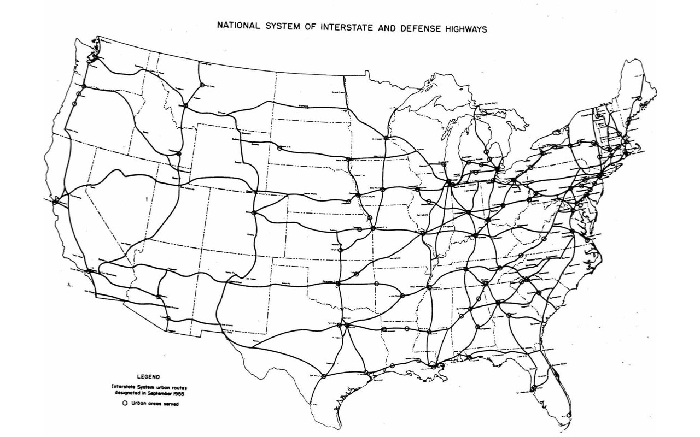The Interstate made it possible to build things no one had imagined before. Like McDonald's! With a nationwide distribution network, you could have a nationwide, standardized restaurant chain.
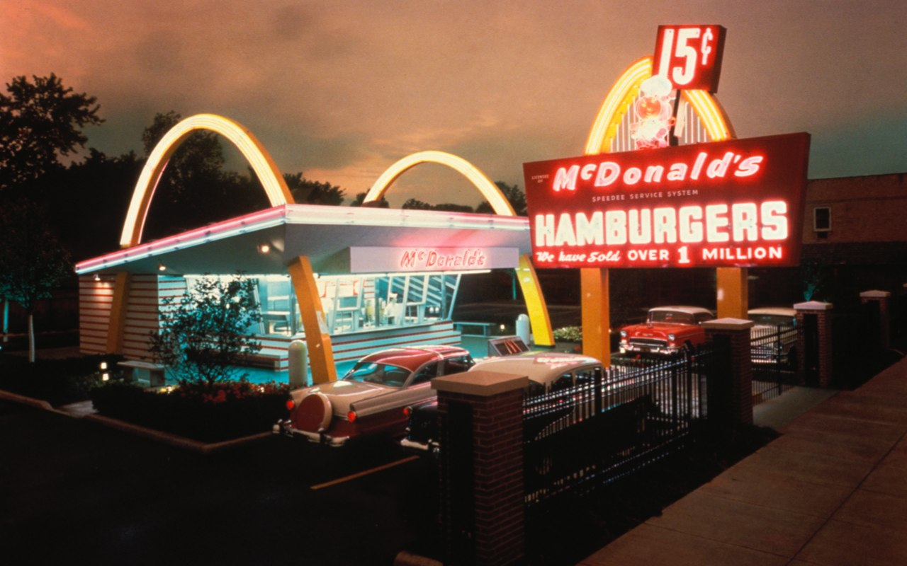The Interstate also gave us the shopping mall. This is a picture of an early mall from 1957, when the concept was new enough that people still made an effort at architecture. You can see a sad little tower in the middle there.
Postwar car culture also gave us the landscape we call suburbia.
To early adopters, the suburbs were a magical place. You could work in the city while your spouse and children enjoyed clean living in the fresh country air. Instead of a crowded city apartment, you lived in a stand-alone house of your own, complete with a little piece of land. The suburbs seemed to combine the best of town and country.
And best of all, you had that car! The car gave you total freedom.
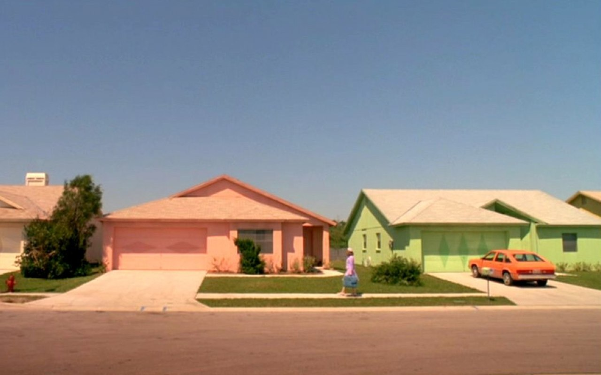As time went on, we learned about the drawbacks of car culture. The wide-open spaces that first attracted people to the suburbs were soon filled with cookie-cutter buildings. Our commercial spaces became windowless islands in a sea of parking lots.
We discovered gridlock, smog, and the frustrations of trying to walk in a landscape not designed for people. When everyone has a car, it means you can't get anywhere without one. Instead of freeing you, the car becomes a cage.
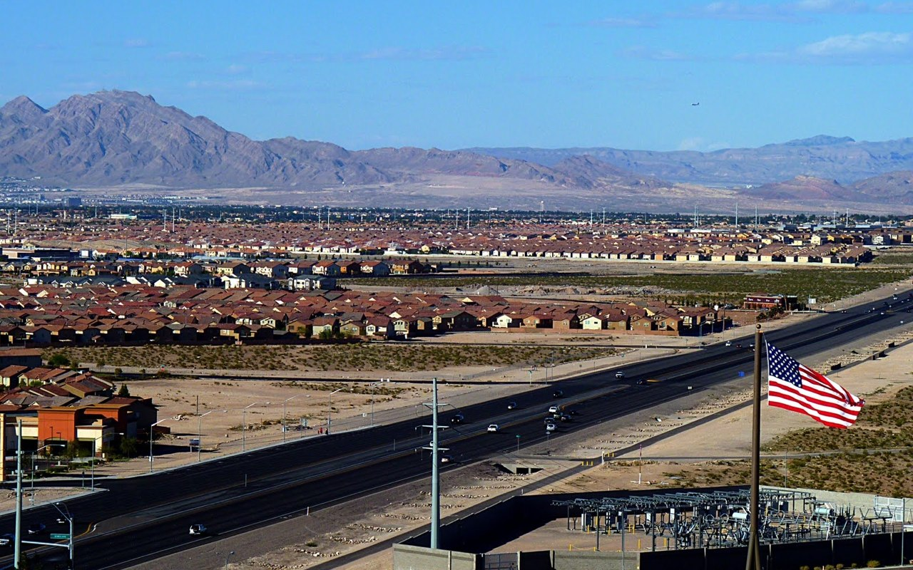The people who built the cars and the roads didn't intend for this to happen. Perhaps they didn't feel they had a say in the matter. Maybe the economic interests promoting car culture were too strong. Maybe they thought this was the inevitable price of progress.
Or maybe they lacked an alternative vision for what a world with cars could look like.
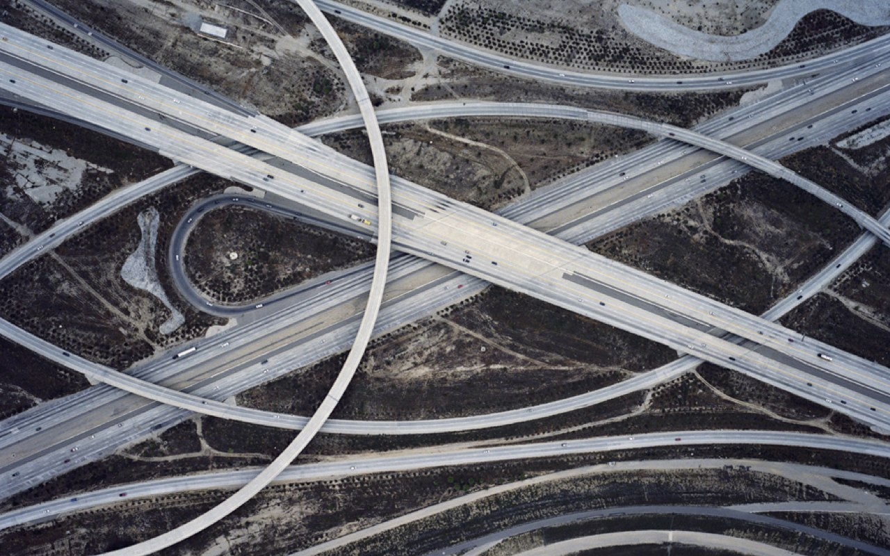All of us are early adopters of another idea— that everyone should always be online. Those of us in this room have benefitted enormously from this idea. We're at this conference because we've built our careers around it.
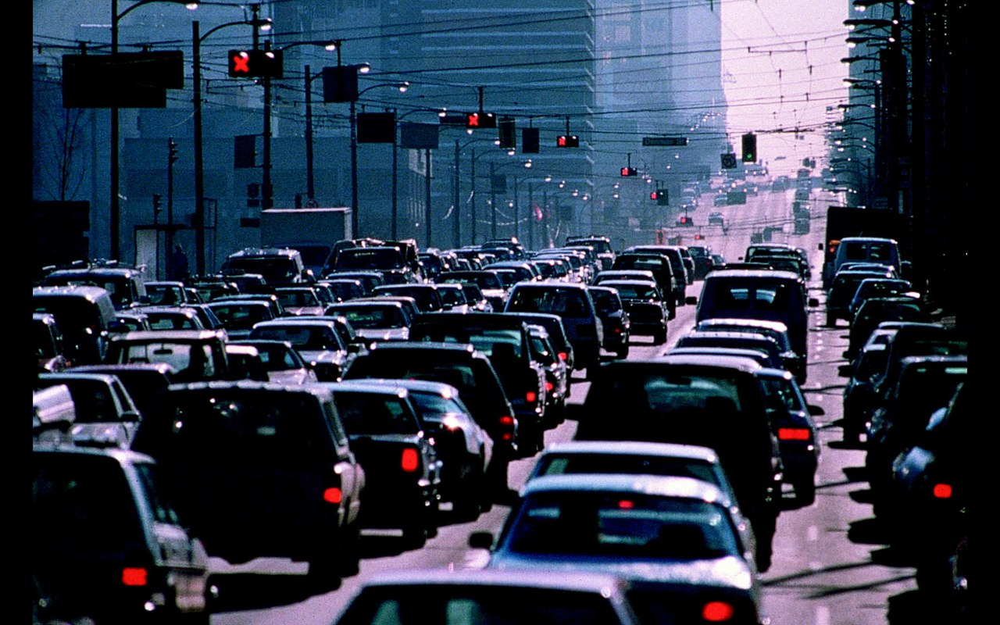But enough time has passed that we're starting to see the shape of the online world to come. It doesn't look appealing at all. At times it looks downright scary.
How about this fellow? Just strolling along the log! Gonna eat some ants!
The internet remembers too much
I've come to believe that a lot of what's wrong with the Internet has to do with memory. The Internet somehow contrives to remember too much and too little at the same time, and it maps poorly on our concepts of how memory should work.
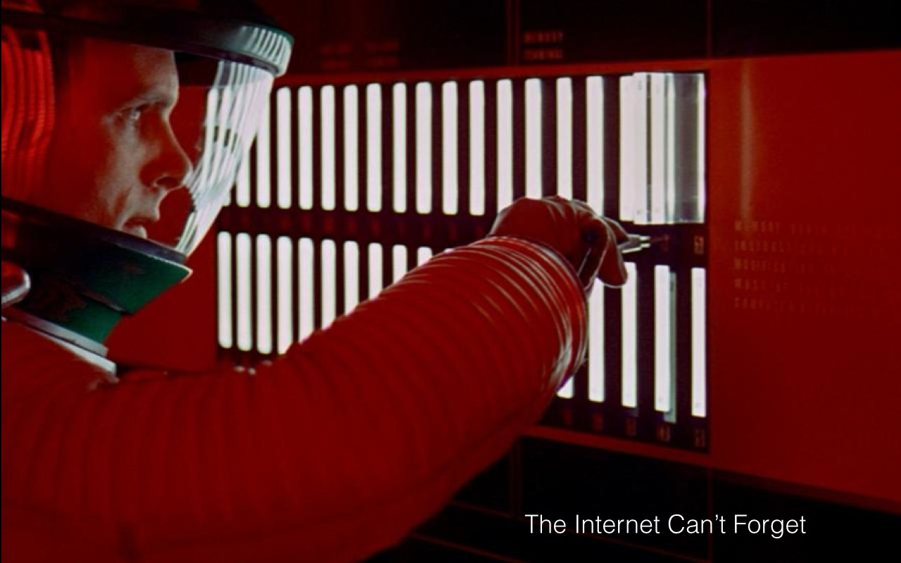I don't know if they did this in Germany, but in our elementary schools in America, if we did something particularly heinous, they had a special way of threatening you. They would say: "This is going on your permanent record".
It was pretty scary. I had never seen a permanent record, but I knew exactly what it must look like. It was bright red, thick, tied with twine. Full of official stamps.
The permanent record would follow you through life, and whenever you changed schools, or looked for a job or moved to a new house, people would see the shameful things you had done in fifth grade.
How wonderful it felt when I first realized the permanent record didn't exist. They were bluffing! Nothing I did was going to matter! We were free!
And then when I grew up, I helped build it for real.
Anyone who works with computers learns to fear their capacity to forget. Like so many things with computers, memory is strictly binary. There is either perfect recall or total oblivion, with nothing in between. It doesn't matter how important or trivial the information is. The computer can forget anything in an instant. If it remembers, it remembers for keeps.
This doesn't map well onto human experience of memory, which is fuzzy. We don't remember anything with perfect fidelity, but we're also not at risk of waking up having forgotten our own name. Memories tend to fade with time, and we remember only the more salient events.
Every programmer has firsthand experience of accidentally deleting something important. Our folklore as programmers is filled with stories of lost data, failed backups, inadvertently clobbering some vital piece of information, undoing months of work with a single keystroke. We learn to be afraid.
And because we live in a time when storage grows ever cheaper, we learn to save everything, log everything, and keep it forever. You never know what will come in useful. Deleting is dangerous. There are no horror stories—yet—about keeping too much data for too long.
Unfortunately, we've let this detail of how computers work percolate up into the design of our online communities. It's as if we forced people to use only integers because computers have difficulty representing real numbers.
Our lives have become split between two worlds with two very different norms around memory.
The offline world works like it always has. I saw many of you talking yesterday between sessions; I bet none of you has a verbatim transcript of those conversations. If you do, then I bet the people you were talking to would find that extremely creepy.
I saw people taking pictures, but there's a nice set of gestures and conventions in place for that. You lift your camera or phone when you want to record, and people around you can see that. All in all, it works pretty smoothly.
The online world is very different. Online, everything is recorded by default, and you may not know where or by whom. If you've ever wondered why Facebook is such a joyless place, even though we've theoretically surrounded ourselves with friends and loved ones, it's because of this need to constantly be wearing our public face. Facebook is about as much fun as a zoning board hearing.
It's interesting to watch what happens when these two worlds collide. Somehow it's always Google that does it.
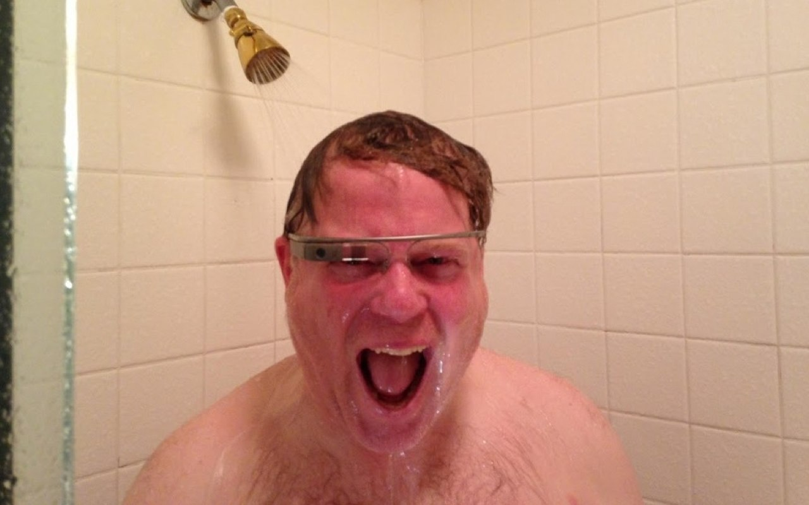I'd much rather look at this bird than at Scoble.
One reason there's a backlash against Google glasses is that they try to bring the online rules into the offline world. Suddenly, anything can be recorded, and there's the expectation (if the product succeeds) that everything will be recorded. The product is called 'glass' instead of 'glasses' because Google imagines a world where every flat surface behaves by the online rules. [The day after this talk, it was revealed Google is seeking patents on showing ads on your thermostat, refrigerator, etc.]
Well, people hate the online rules!
Google's answer is, wake up, grandpa, this is the new normal. But all they're doing is trying to port a bug in the Internet over to the real world, and calling it progress.
You can dress up a bug and call it a feature. You can also put dog crap in the freezer and call it ice cream. But people can taste the difference.
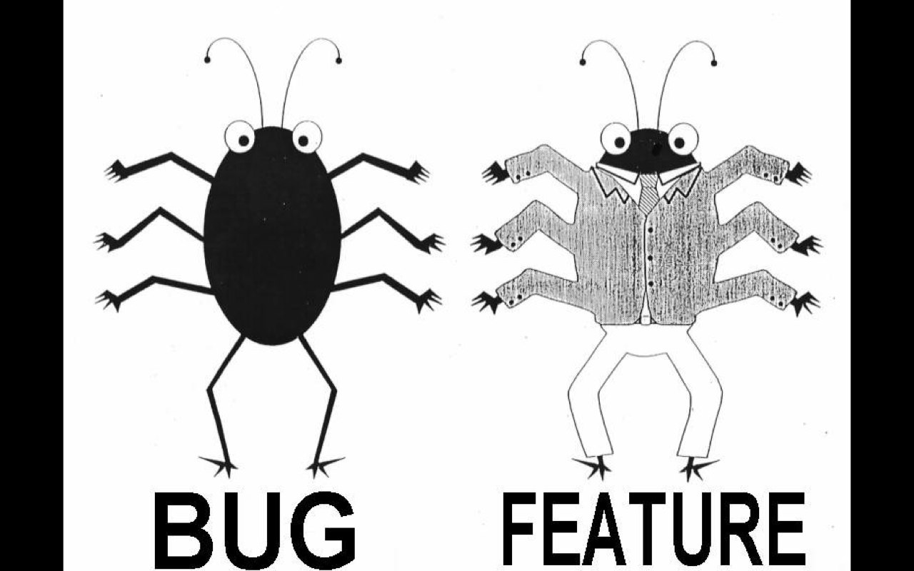There's another reason, besides fear, that's driving us to save everything. That reason is hubris.
You've all seen those TV shows where the cops are viewing a scene from space, and someone keeps hitting "ENHANCE", until pretty soon you can count the bacteria on the criminal's license plate.
We all dream of building that 'enhance' button. In the past, we were going to build it with artificial intelligence. Now we believe in "Big Data". Collect enough information, think of a clever enough algorithm, and you can find anything.
This is the classic programmer's delusion, the belief that if you look deep enough, there's a hidden deterministic pattern. Tap the chisel on the right spot and the rock will crack open.
The belief in Big Data turns out to be true, although in an unexpected way. If you collect enough data, you really can find anything you want.
This is a graph from Tyler Vigen's lovely website, which been making the rounds lately. This one shows the relationship between suicides by hanging and the number of lawyers in North Carolina. There are lots of other examples to choose from.
There's a 0.993 correlation here. You could publish it in an academic journal! Perhaps that process could be automated.
You can even imagine stories that could account for that bump in the middle of the graph. Maybe there was a rope shortage for a few weeks?
'Big data' has this intoxicating effect. We start collecting it out of fear, but then it seduces us into thinking that it will give us power. In the end, it's just a mirror, reflecting whatever assumptions we approach it with.
But collecting it drives this dynamic of relentless surveillance.
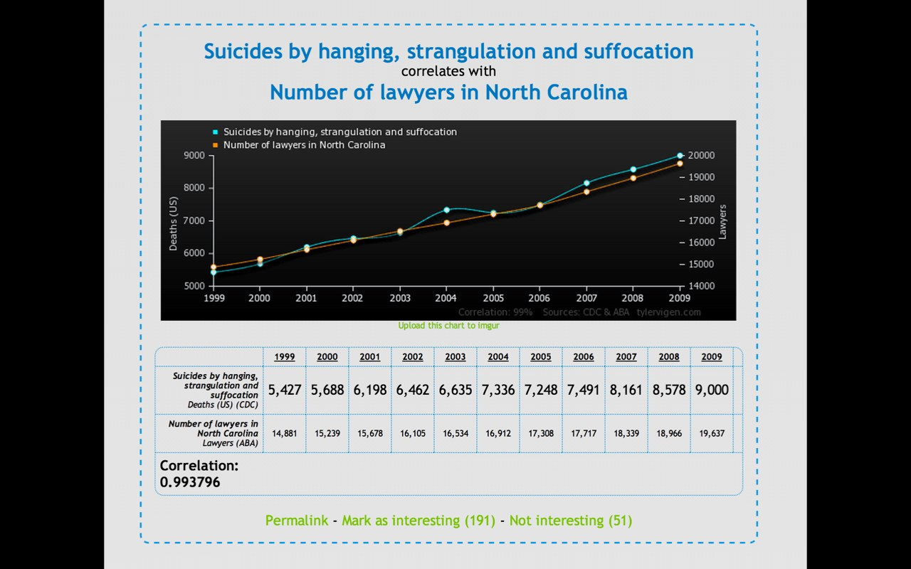The web has a center
When the web was young, we pictured it looking something like this.
The web was a big mess of hypertext, all linked together. The first browsers also included an authoring tool. It was expected that you wouldn't just consume the web, but contribute to it as well.
Like the Internet that it ran on, the web was decentralized, chaotic, but also resilient. There were no obvious points of control, and the whole thing was too big for one company, or even one country, to get its hands around.
Today, of course, the web looks more like this. The services we use most have all been centralized.
The first thing to centralize was search. Google found a superior way to index our web, and the other search engines faded away. Then Google acquired the one true ad network, and wrote the dominant analytics suite.
Email centralized in the face of rampant spam, with attractive offers of free storage to sweeten the deal.
Facebook won the social network wars in the US, and began gobbling up competitors in other countries.
The mobile devices that are taking over the web fall into one of two camps. One of them pretends to be more open than the other, but it's mostly a matter of marketing. In practice they both have complete control of their ecosystem.
The problem with a centralized web is that the few points of control attract some unsavory characters.
The degree of centralization is remarkable. Consider that Google now makes hardware, operating systems, and a browser.
It's not just possible, but fairly common for someone to visit a Google website from a Google device, using Google DNS servers and a Google browser on the way.
This is a level of of end-to-end control that would have caused us to riot in the streets if Microsoft had attempted it in 1999. But times have changed.
And then there's the cloud. The cloud fascinates me because of the distance between what it promises and what it actually is.
The cloud promises us complete liberation from the mundane world of hardware and infrastructure. It invites us to soar into an astral plane of pure computation, freed from the weary bonds of earth.
What the cloud is is a big collection of buildings and computers that we actually know very little about, run by a large American company notorious for being pretty terrible to its workers. Who knows what angry sysadmin lurks inside the cloud?
The cloud is a fog of sweet, sweet promises. Amazon promises eleven nines of durability. Eleven nines! The Sun will be a charred cinder before a single bit gets flipped in a file you've stored on S3.
Amazon promises no single points of failure. Instead, you get a single cloud of failure, the promise that when the system comes crashing down, at least you won't be alone.
The problem with these points of control, of course, is that they make it very easy to spy on everyone.
Everyone is spying
Over the past year, we've learned a lot about the extent to which the American government monitors the Internet.
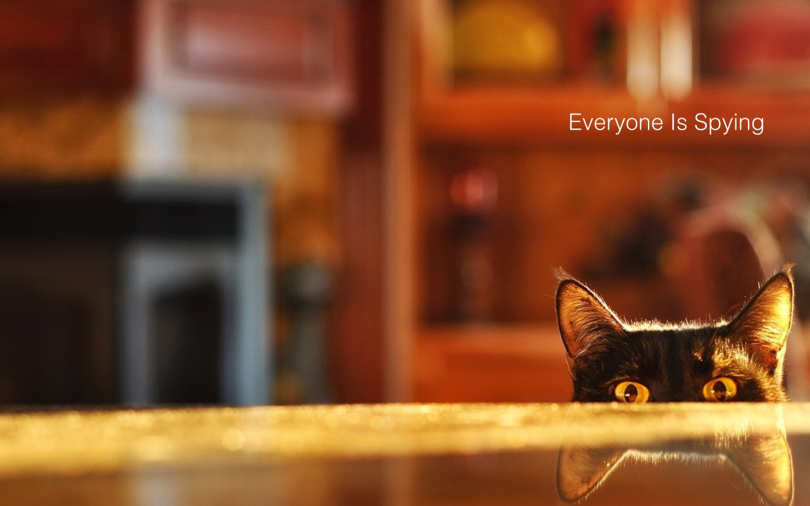It's been amusing to watch Silicon Valley clutch its pearls and express shock that the government would dare to collect the same data as private industry.
You could argue (and I do!) that this data is actually safer in government hands. In the US, at least, there's no restriction on what companies can do with our private information, while there are stringent limits (in theory) on our government. And the NSA's servers are certainly less likely to get hacked by some kid in Minsk.
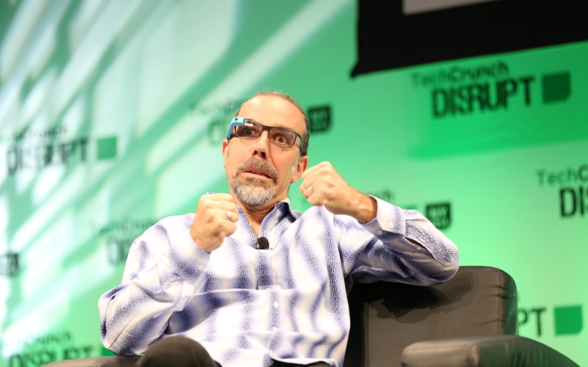But I understand that the government has guns and police and the power to put us in jail. It is legitimately frightening to have the government spying on all its citizens. What I take issue with is the idea that you can have different kinds of mass surveillance.
If these vast databases are valuable enough, it doesn't matter who they belong to. The government will always find a way to query them. Who pays for the servers is just an implementation detail.
It's romantic to think about cable taps and hacked routers, but history shows us that all an interested government has to do is ask. The word 'terrorism' is an open sesame that opens any doors. Look what happened with telecoms under the Bush administration. The NSA asked for permission to tap phone networks, and every American telecom except one said "no problem—let me help you rack those servers". Their only concern was to make sure they got immunity against lawsuits.
The relationship between the intelligence agencies and Silicon Valley has historically been very cozy. The former head of Facebook security now works at NSA. Dropbox just added Condoleeeza Rice, an architect of the Iraq war, to its board of directors. Obama has private fundraisers with the same people who are supposed to champion our privacy. There is not a lot of daylight between the American political Establishment and the Internet establishment. Whatever their politics, these people are on the same team.
If a company doesn't want to cooperate, the US can trivially obtain whatever it wants through a secret court that doesn't know how to say "no". There's no way of knowing how extensively this authority is used, because the very existence of this kind of order is a state secret.
Much of the current debate around the NSA involves making minor changes to this secret mechanism. Americans have an almost perverse faith in the rule of law. They believe that, as long as the secret courts are making sure the secret police obey the secret laws, our democracy is safe. Let the large companies publish statistics about how many requests they field, and the whole problem will go away.
For most of you, of course, this legal hair-splitting is beside the point. As "non-US-persons", you fall completely outside the protection of our privacy laws. Too bad your data is on our servers!
But this talk of secret courts and wiretaps is a little bit misleading. It leaves us worrying about James Bond scenarios in a Mr. Bean world.
Not long ago Jim Ardis, the mayor of Peoria, Illinois, got angry at some kid making fun of him on Twitter. Peoria is a Midwestern city about the size of my finger. Ardis was quickly able to obtain warrants against Twitter and Comcast, compelling them to hand over all the information they had on this evildoer. Ardis then got a search warrant against this person's house and computer equipment.
The police found a bag of pot, and now the guy's roommate is up on Federal drug charges.
You don't have to be afraid of the CIA or NSA. Be afraid of American municipal government!
My point again: it's silly to pretend that keeping mass surveillance in private hands would protect us from abuses by government. The only way to keep user information safe is not to store it.
Public and private surveillance are in a curious symbiosis with each other.
A few weeks ago, the sociologist Janet Vertesi gave a talk about her efforts to keep Facebook from learning she was pregnant. Pregnant women have to buy all kinds of things for the baby, so they are ten times more valuable to Facebook's advertisers.
At one point, Vertesi's husband bought a number of Amazon gift cards with cash, and the large purchase triggered a police warning. This fits a pattern where privacy-seeking behavior has become grounds for suspicion. Try to avoid the corporate tracking system, and you catch the attention of the police instead.
As a wise man once said, if you have something that you don’t want anyone to know, maybe you shouldn’t be doing it in the first place.
But there are also dangerous scenarios that don't involve government at all, and that we don't talk enough about.
I'll use Facebook as my example. To make the argument stronger, let's assume that everyone currently at Facebook is committed to user privacy and doing their utmost to protect the data they've collected.
What happens if Facebook goes out of business, like so many of the social networks that came before it? Or if Facebook gets acquired by a credit agency? How about if it gets acquired by Rupert Murdoch, or taken private by a hedge fund?
What happens to all that data?
I was a big Friendster user in 2004. Did anybody here use Friendster? [American hands go up; Germans had their own thing]. I used it to meet people, I uploaded a lot of photos; I had a nice profile.
Where's all that data now?
Here's a screenshot of Friendster from yesterday. I guess they've turned it into some kind of online game. Notice that big 'log in with Facebook' button, for those who didn't learn their lesson the first time.
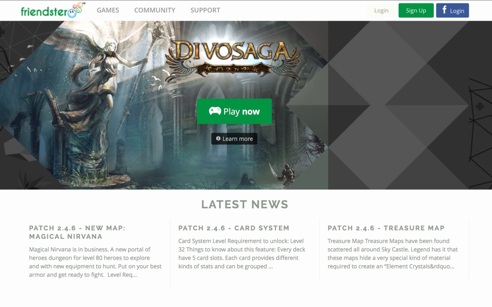How about SixDegrees.com, did anybody here use that? That was the first big social network, back in 1999. You'll notice the domain doesn't even resolve now.
So where's all that data?
We've all had the experience of deciding to share information with a small website, only to watch them later get acquired by a large company we would have preferred not see our data. But once you share it, you have no control over where it goes next.
Sooner or later, one of the giant websites will meet a similar fate. And then we'll have to scramble, try to remember exactly what they learned about us over the years, and what the consequences of that might be.
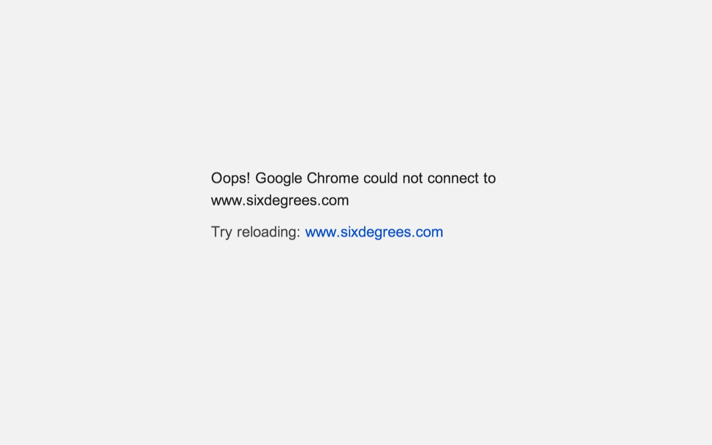Some more scenarios:
What happens if Facebook hires their own Snowden, someone who for ideological reasons decides that data should be published?
What if they hire an incompetent or malicious sysadmin? Facebook engineers are working on Blu-Ray storage technology with a fifty-year time horizon. Are they going to go fifty years without making a seriously bad hire?
What if they hire a researcher who releases three months of 'anonymized' data that turns out not to be anonymous at all, like happened at AOL?
Well, that could never happen again, right? No one could violate user privacy on that scale. Except for Google Buzz, which automatically shared your online activity with the people who emailed you the most often, because Google testers failed to imagine a situation where the person emailing you most often is someone you're trying to avoid.
Or Google Plus, which demanded that everyone link their Google activity to their real name, and applied serious pressure to get people to sign up to the new service.
I consider myself a pretty cautious user, and I was tricked into creating a Google Plus account by a deceptive dialog box on YouTube. How many other people did that happen to?
These are all situations where users who were rigorous about keeping their online and real identity separate found themselves kneecapped by a service that suddenly violated its promise of privacy.
There is a lot of potential for harm around these vast collections of private data. To some extent, the focus on government spying prevents us from thinking harder about the real pitfalls of a permanent record.
Out of curiosity, how many people here would be comfortable having their Google search history published? [No hands go up in a room of 800 people]. No Bing users here, I see.
This was a nice idea making the rounds. For those who can't see it, it's a medical alert bracelet that says 'Delete My Browser History'.
What are you all trying to hide?
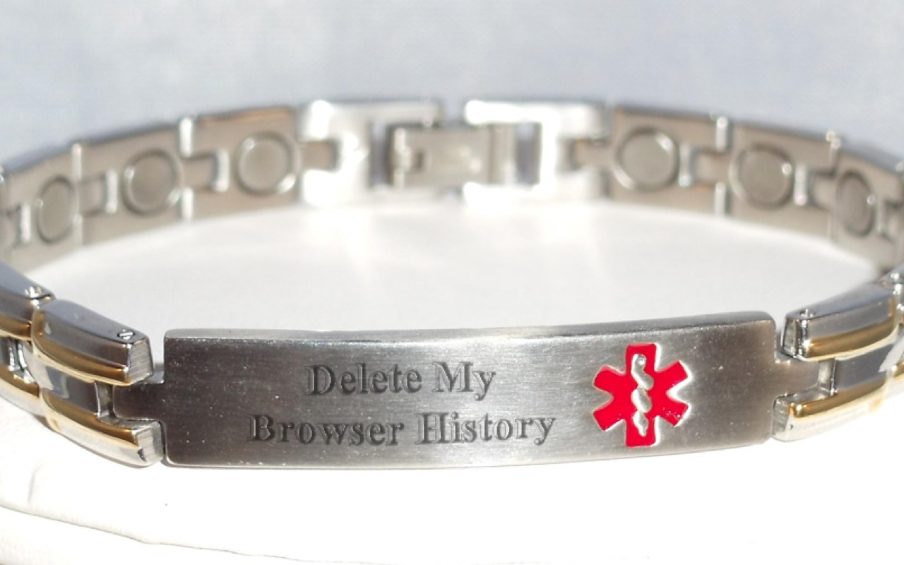As a German audience, you understand just how dangerous and powerful this material is, because you had to deal with the problem of what to do with it during reunification. East Germany had massive archives of secret police files on innocent people. It was this huge dump of informational toxic waste.
I'm going to use an example from Poland instead, since I'm more familiar with the situation there. But it's quite similar to what happened in Germany.
From 1945 to 1990, the secret police kept files on all kinds of Polish citizens: dissidents, informers, journalists, anyone who was politically active, people who had contacts abroad.
After the fall of communism in 1989, those files became the hot potato of Polish politics. No one could agree on how to vet them, or whose job it should be, or whether any of them should be published. The question was quickly politicized and remains a touchy issue today. Governments have fallen over the question. We almost had a coup d'état because of it in the early nineties!
Some of the people in those files were police informers. Maybe they did it for money, or out of misguided patriotism, or maybe they got scared and cracked under the pressure of interrogation. Many of them were innocent men and women called in for questioning who refused to cooperate. Sometimes the secret police would fabricate names and confessions out of whole cloth to meet a bureaucratic quota.
None of these distinctions matter in the political carnival surrounding who had been a Communist informant. If your name is in the files, it means you were an informer. It has become a shameful war of leaks, counterleaks, and insinuations that Joe McCarthy would relish.
The apex of craziness came when people accused Lech Wałęsa of collaboration. Set aside the question of whether people should be pilloried for mistakes they made forty years ago. If the secret police hired Wałęsa, that was the worst hiring decision in the history of time. But it doesn't matter in the crazy clown car of Polish politics.
It gets worse, though. In the eighties, a police operation called Project Hyacinth collected information on thousands of gay and lesbian citizens, as well as people the police suspected of homosexual leanings. These are known as the "pink files".
Every government since 1989 has agreed that the files should not have been created, and that collecting this material violated basic human rights. Everyone agrees the files need to be destroyed. Poland remains a very homophobic country, so the pink files are incendiary stuff, especially to people in public life.
And yet, the data is still around... somewhere. No one is sure which archives the files are in. No one wants to find them. The pink files are political kryptonite. The police have complained that locating and destroying the material would require 200 man years of effort, something they don't have the budget for.
So twenty-five years after the fall of Communism, these shameful files live on in bureaucratic limbo, hanging over the heads of eleven thousand innocent people.
These big collections of personal data are like radioactive waste. It's easy to generate, easy to store in the short term, incredibly toxic, and almost impossible to dispose of. Just when you think you've buried it forever, it comes leaching out somewhere unexpected.
Managing this waste requires planning on timescales much longer than we're typically used to. A typical Internet company goes belly-up after a couple of years. The personal data it has collected will remain sensitive for decades.
Consider that the stuff in those "pink files" is peanuts compared to the kind of data now sitting on servers in Mountain View.
Now I want to lighten the mood by arguing that the entire economic foundation of our industry is rotten.
Man, it's a good thing you're a German audience. I promise there's another animal slide coming up.
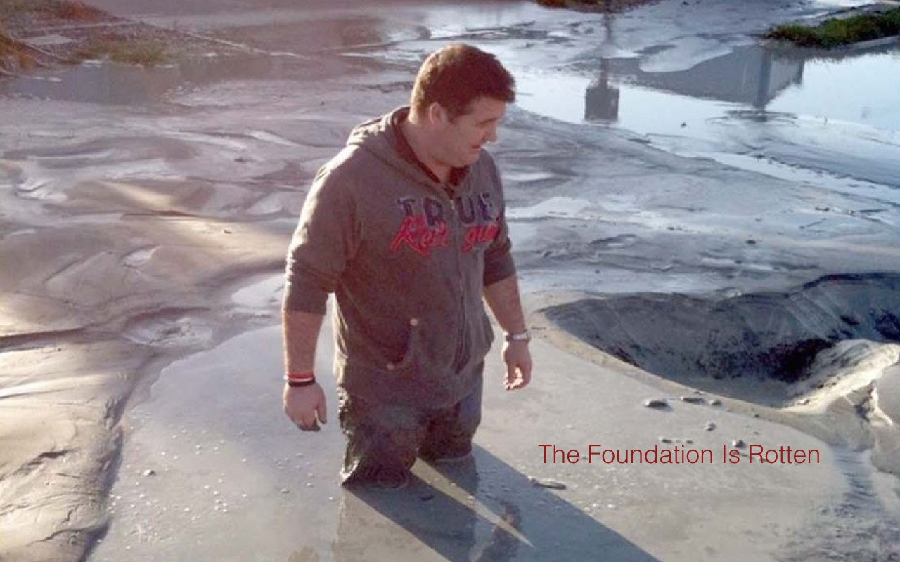Before the Internet, advertisers lived in the Dark Ages. If you wanted to run an ad campaign, you went to Don Draper.
Draper would sip his whiskey and tell you what your next ad campaign would look like.
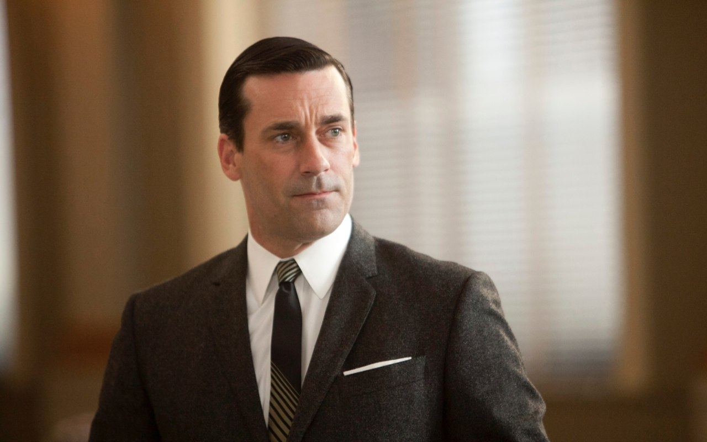"We're going to say that smoking keeps you skinny. Bottoms up, gentlemen!"
And that was it. The next quarter you looked at your sales figures. If they were up, that meant the ad campaign had succeeded.
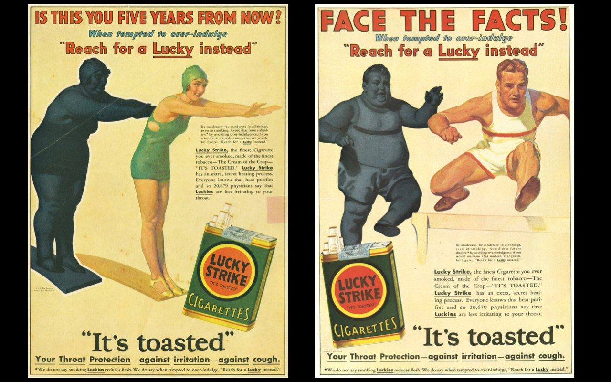The Internet was Christmas for advertisers. Suddenly you could know exactly who was looking at your ads, and you could target them by age, sex, income, location, almost any criterion you wanted.
One of the first banner ads had a click-through rate of 78%. That's mind-boggling. Do you know what two words were on that banner ad?
"Shop Naked!" CLICK!
But banner ads turned out to be like poison ivy. People clicked them once, and learned never to touch them again. The industry collapsed in a flurry of pop-overs, pop-unders, and shame.
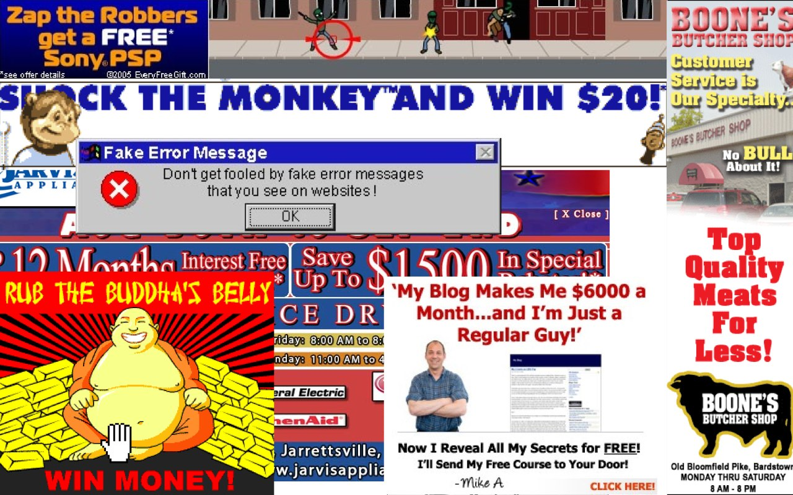Until Google discovered you could serve little text ads in context, and people would click on them. The whole industry climbed on this life raft, and remains there to this day. Advertising, or the promise of advertising, is the economic foundation of the world wide web.
Let me talk about that second formulation a little bit, because we don't pay enough attention to it. It sounds like advertising, but it's really something different that doesn't have a proper name yet. So I'm going to call it "Investor Storytime".
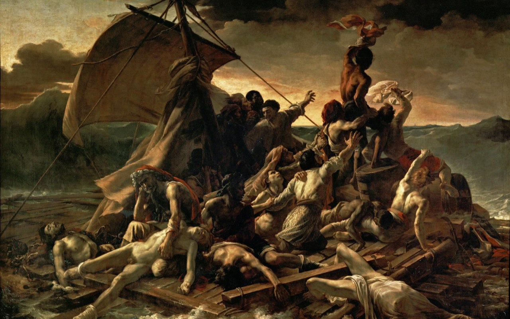Advertising we all know. Someone pays you to convince your users that they'll be happy if they buy a product or service.
Advertising is really lucrative if you run your own ad network. That's like running a casino. You can't help but make money.
If you don't run your own ad network, advertising is a scary business. You bring your user data to the altar and sacrifice it to AdSense. If the AdSense gods are pleased, they rain earnings down upon you.
But if the AdSense gods are angry, there is wailing, and gnashing of teeth. You rend your garments and ask forgiveness, but you can never be sure what you did wrong. Maybe you pray to Matt Cutts, the intercessionary saint at Google, who has been known to descend from the clouds and speak with a human voice.

And your users, of course, HATE advertising. So to keep revenue from falling, you're stuck in an arms race where you have to keep changing up your approach.
Right now, the frontier of advertising is in mobile apps. Next year it will be something else.
Maybe some of you have seen these things popping up recently; paid ads that pretend to be related links. In another few weeks, people will learn to tune them out, and a different plague of ads will descend on us.
Advertising is like the flu. If it's not constantly changing, people develop immunity.
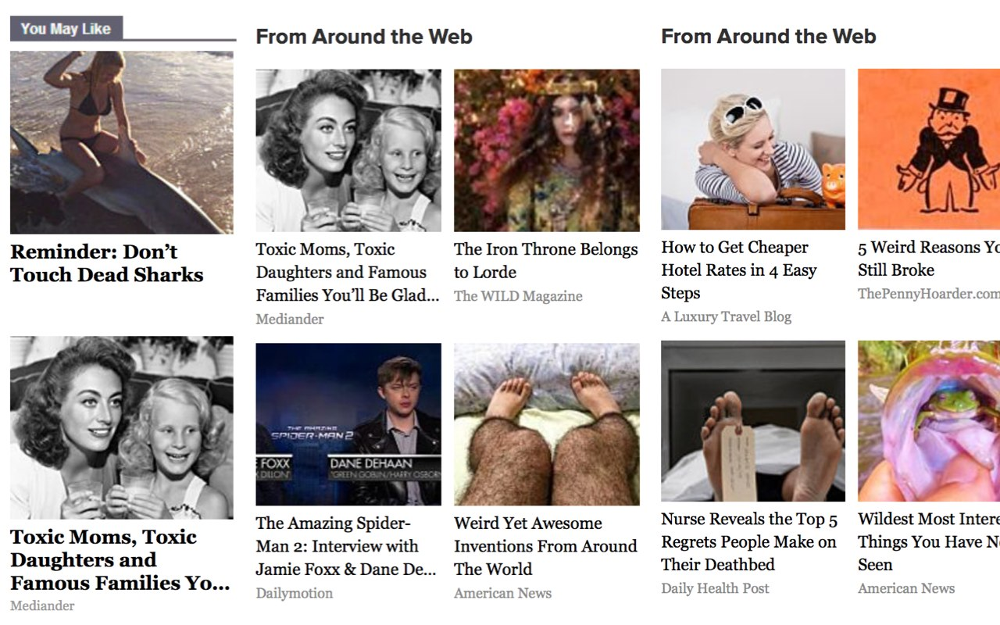Let's compare this to investor storytime.
Recall that advertising is when someone pays you to tell your users they'll be happy if they buy a product or service.
Yahoo is an example of a company that runs on advertising. Gawker is a company that runs on advertising.
Investor storytime is when someone pays you to tell them how rich they'll get when you finally put ads on your site.
Pinterest is a site that runs on investor storytime. Most startups run on investor storytime.
Investor storytime is not exactly advertising, but it is related to advertising. Think of it as an advertising future, or perhaps the world's most targeted ad.
Both business models involve persuasion. In one of them, you're asking millions of listeners to hand over a little bit of money. In the other, you're persuading one or two listeners to hand over millions of money.
I like to think of the quote from King Lear:
I will do such things,—
What they are, yet I know not: but they shall be
The terrors of the earth
That's the essence of investor storytime. Give us money now, and you won't believe how awesome our ads will be when we finally put them on the site.
King Lear would have killed it in Silicon Valley.
Investor storytime has a vastly higher ROI than advertising. Startups are rational, and so that's where they put their energy.

Take the case of Quora. Quora is a question-answering website. You type a question and a domain expert might answer it for you.
Quora's declared competitor is Wikipedia, a free site that not only doesn't make revenue, but loses so much money they have to ask for donations just to be broke.
Recently, Quora raised $80 million in new funding at a $900 million valuation. Their stated reason for taking the money was to postpone having to think about revenue.
Quora walked in to an investor meeting, stated these facts as plainly as I have, and walked out with a check for eighty million dollars.
That's the power of investor storytime.
Let me be clear: I don't begrudge Quora this money. Anything that removes dollars from of the pockets of venture capitalists is something I favor.
But investor storytime is a cancer on our industry.
Because to make it work, to keep the edifice of promises from tumbling down, companies have to constantly find ways to make advertising more invasive and ubiquitous.
Investor storytime only works if you can argue that advertising in the future is going to be effective and lucrative in ways it just isn't today. If the investors stop believing this, the money will dry up.
And that's the motor destroying our online privacy. Investor storytime is why you'll see facial detection at store shelves and checkout counters. Investor storytime is why garbage cans in London are talking to your cell phone, to find out who you are. (You'd think that a smartphone would have more self-respect than to talk to a random garbage can, but you're wrong).
We're addicted to 'big data' not because it's effective now, but because we need it to tell better stories.
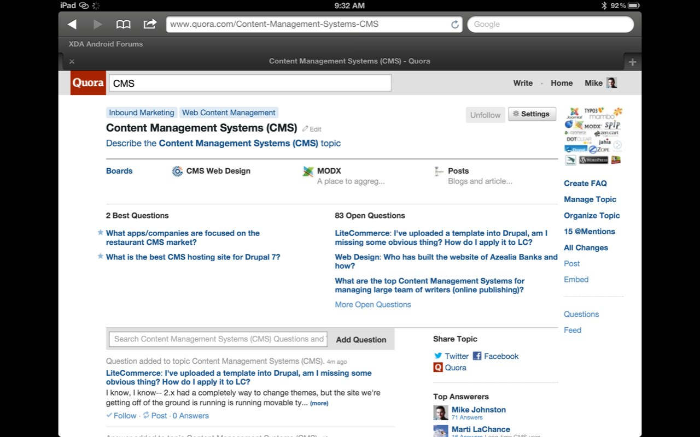This is my cat, Buster. He sleeps like this all the time. I don't have any pictures of him that are in focus because he is so incredibly fuzzy.
Don't you just want to rub that big fat belly? He totally lets you do it, too, unlike most cats.
So let's have a look at what all this surveillance is buying us. The state of the art in Internet ads, circa 2014. Let's see what the greatest minds of my generation have cooked up for me, the eager consumer.
In the weeks before this conference, I took notes about the ads I was seeing on YouTube. I chose YouTube because I haven't figured out how to block these ads yet.
Now, I didn't cheat. I stay logged into Google and YouTube, and they have access to all my email, viewing habits, and search history for the past ten years. So:
I saw a lot of ads for GEICO, a brand of car insurance that I already own.
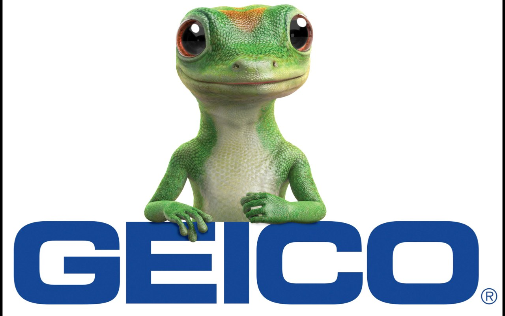I saw multiple ads for Red Lobster, a seafood restaurant chain in America. Red Lobster doesn't have any branches in San Francisco, where I live.
YouTube showed me tons of makeup ads, including multiple promos for this woman's YouTube channel.
There was an ad for the new Pixies album. This was the one ad that was well targeted; I love the Pixies. I got the torrent right away.
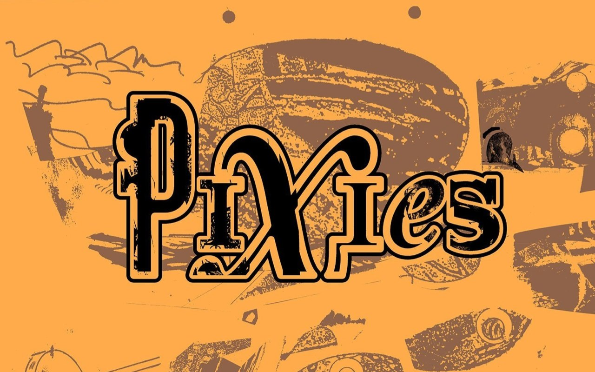I saw some ads for this place called Passages. The ad didn't say what it was; I had to look it up. It's an $88,000 per month rehab clinic in Malibu!
Finally, I saw a ton of ads for Zipcar, which is a car sharing service.
These really pissed me off, not because I have a problem with Zipcar, but because they showed me the algorithm wasn't even trying.
It's one thing to get the targeting wrong, but the ad engine can't even decide if I have a car or not! You just showed me five ads for car insurance. You don't care that you're mathematically certain to be wasting my time.
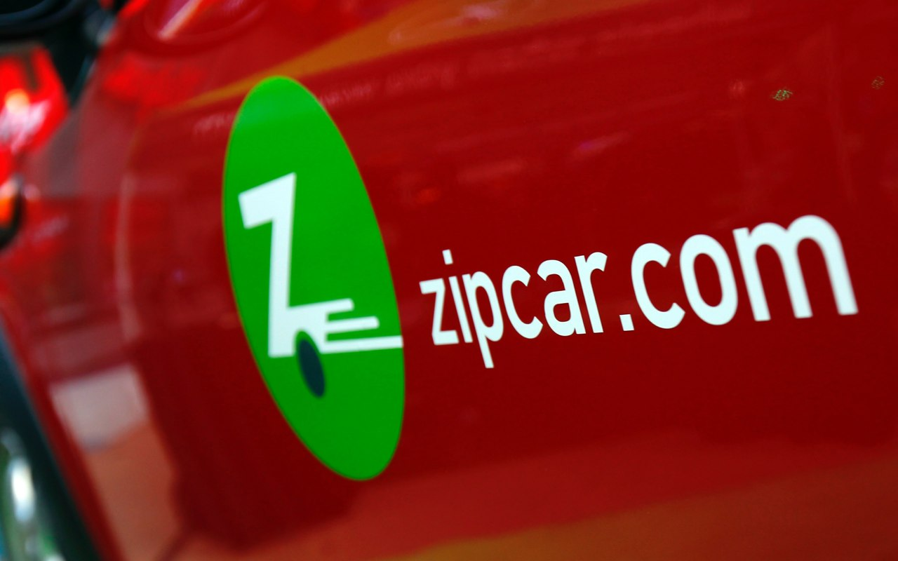Google's answer to this is to demand more personal information. They offer a little 'ad preferences' panel that lets you better target your interests.
To me that's like telling the firing squad to move their guns a little to the left, but in the interests of science, I clicked through.
And there I found out that Google thinks I am an Arabic speaking woman, age 25-34, whose interests include "Babies & Toddlers", "Meat & Seafood", and "Greater Cleveland".
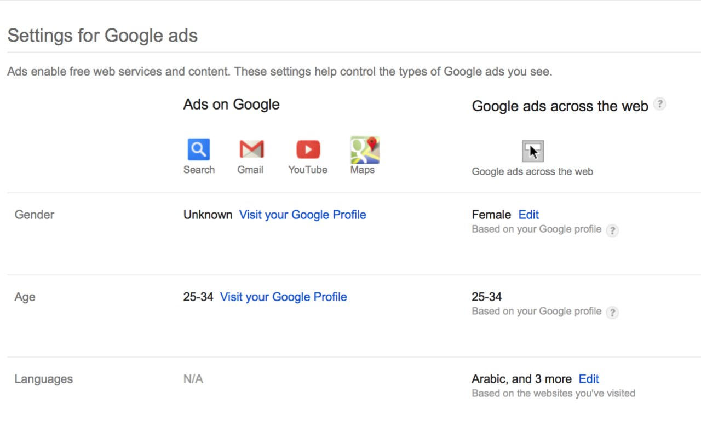In other words, this is who Google thinks I am. [Apologies to Fairouz!]
In reality, I'm a 38 year old dude who has no interest in babies, toddlers, or Cleveland. In fairness, I do have a profound interest in meat and seafood.
Now sure, this is just anecdotal data. But we don't get to experience the Platonic ideal of targeted advertising. We have to sit through the crappy parts too.
Consider your own experience. Spend half an hour on the Internet with ad blocking turned off, if you dare. These "targeted" ads just don't target very well. They work on the same principle as spam: throw enough of this shit at a user, and someone is going to click.
And it comes at such a steep price.
Of course, for ad sellers, the crappiness of targeted ads is a feature! It means there's vast room for improvement. So many stories to tell the investors.
This ghost of a business model propels us to ever greater extremes of surveillance. If the algorithms don't work, that's a sign we need more data. If the algorithms do work, then imagine how much better they'll work with more data. There's only one outcome allowed: collect more data.
I don't oppose advertising. I think ads have an important role to play.
But advertising, and stories about advertising, can't carry the weight of our entire industry.
Right, Mr. Walrus?
It should be illegal to collect and permanently store most kinds of behavioral data.
In the United States, they warn us the world will end if someone tries to regulate the Internet. But the net itself was born of a fairly good regulatory framework that made sure de facto net neutrality existed for decades, paid for basic research into protocols and software, cleared the way for business use of the internet, and encouraged the growth of the commercial web.

It's good regulation, not lack of regulation, that kept the web healthy.
Here's one idea for where to begin:
- Limit what kind of behavioral data websites can store. When I say behavioral data, I mean the kinds of things computers notice about you in passing—your search history, what you click on, what cell tower you're using. It's very important that we regulate this at the database, not at the point of collection. People will always find creative ways to collect the data, and we shouldn't limit people's ability to do neat things with our data on the fly. But there should be strict limits on what you can save.
- Limit how long they can keep it. Maybe three months, six months, three years. I don't really care, as long as it's not fifty years, or forever. Make the time scale for deleting behavioral data similar to the half-life of a typical Internet business.
- Limit what they can share with third parties. This limit should also apply in the event of bankruptcy, or acquisition. Make people's data non-transferable without their consent.

- Enforce the right to download. If a website collects information about me, I should be allowed to see it. The EU already mandates this to some extent, but it's not evenly enforced.
- This rule is a little sneaky, because it will require backend changes on many sites. Personal data can pile up in all kinds of dark corners in your system if you're not concerned about protecting it. But it's a good rule, and easy to explain. You collect data about me? I get to see it.
- Enforce the right to delete. I should be able to delete my account and leave no trace in your system, modulo some reasonable allowance for backups.

- Give privacy policies teeth. Right now, privacy policies and terms of service can change at any time. They have no legal standing. For example, I would like to promise my users that I'll never run ads on my site and give that promise legal weight. That would be good marketing for me. Let's create a mechanism that allow this.
- Let users opt-in if a site wants to make exceptions to these rules. If today's targeted advertising is so great, you should be able to persuade me to sign up for it. Persuade me! Convince me! Seduce me! You're supposed to be a master advertiser, for Christ's sake!
- Make the protections apply to everyone, not just people in the same jurisdiction as the regulated site. It shouldn't matter what country someone is visiting your site from. Keep it a world-wide web.
Decentralize
I was very taken with Bastian Allgeier's talk yesterday on decentralization. And we'll be discussing a lot of these issues at Decentralize Camp tomorrow. Folklore has it that the Internet was designed to survive a nuclear war. Bombs could take out lots of nodes, but the net would survive and route around the damage. I think this remains a valuable idea, though we never quite got there. A good guiding principle is that no one company, or one country, should have the ability to damage the Internet, even if it begins to act maliciously.

We have a broad consensus on the need to decentralize the web; the question is how to do it. In this respect, I think even a little decentralization goes a long way. Consider how much better it is to have four major browser vendors, compared to the days of Internet Explorer. Some kinds of services are just crying out for decentralization. Fifty years from now, people will be shocked that we had one social network that all seven billion people on the planet were expected to join.
Imagine if there was only one bar in Düsseldorf, or all of Germany, and if you wanted to hang out with your friends, you had to go there. And when you did, there were cameras everywhere, and microphones, and you were constantly being interrupted by people selling you stuff. That's the situation that obtains with Facebook today.
Surveillance as a business model is the only thing that makes a site like Facebook possible.
De-Americanize
I have always wanted to have a ‚Death to America!' slide. Maybe I should just say ‚de-americanize'. As a naturalized US citizen, whose citizenship can potentially be revoked by court order, let me just say America is the greatest country on Earth, and I am lucky to live there. I am sorry that you can't live there too.
In fact, we're so great that we can probably spare one or two of these giant websites and let you replace them with something based here in Europe. In the past year, you've seen that there is not a lot of concern in America for the privacy rights of the average German citizen. I think ‚zero' would be a fair number to put on that.

If your prime minister can't get us to stop bugging her phone, how secure do you think your own data is, when you send it to California?
And speaking of California, let me try another tack.
This festive map shows seismic hazard in Northern California, where pretty much all the large Internet companies are based, along with a zillion startups. The ones that aren't here have their headquarters in an even deadlier zone up in Cascadia.
Now of course, each company has four zillion datacenters, backed up across the world. But how much will that matter when there's a major quake, and Silicon Valley can't get to work for a month? All of these headquarters are going to be shut down for a long time when the Big One comes. You're going to notice it.

So even if you don't agree with my politics, maybe you'll agree with my geology. Let's not build a vast, distributed global network only to put everything in one place! I'm tired of being scared of what the web is going go look like tomorrow.
Yesterday, during Robin's incredible talk, I realized how long it had been since I looked at a new technology with wonder, instead of an automatic feeling of dread.
[Robin Christiansen gave a profoundly moving talk about the ways in which smartphones, image recognition, wearable computers and other technologies are changing the lives of disabled people. Robin, who is blind, gave live demos of the apps and technologies he uses to better navigate the world, showing the extent to which they've restored his autonomy.]
One of the worst aspects of surveillance is how it limits our ability to be creative with technology. It's like a tax we all have to pay on innovation. We can't have cool things, because they're too potentially invasive.

Imagine if we didn't have to worry about privacy, if we had strong guarantees that our inventions wouldn't immediately be used against us. Robin gave us a glimpse into that world, and it's a glimpse into what made computers so irresistible in the first place.
I have no idea how to fix it. I'm hoping you'll tell me how to fix it. But we should do something to fix it. We can try a hundred different things. You people are designers; treat it as a design problem! How do we change this industry to make it wonderful again? How do we build an Internet we're not ashamed of?

I'd like to thank Britta Gustafson, Matthew Haughey, Diane Person, Sacha Judd and Thomas Ptacek, who helped me greatly with this talk.
[Honorable mention goes to Anil Dash, who liked a photo of it on Facebook.]
Thank you for your kind attention today. I hope you had a wonderful conference.
Stormy, prolonged applause.